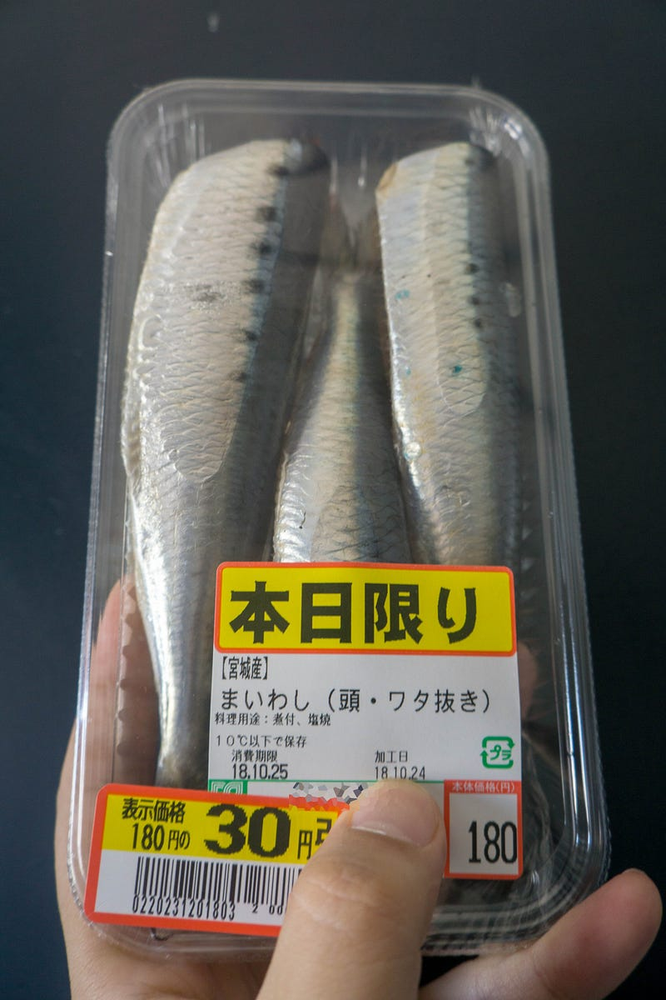
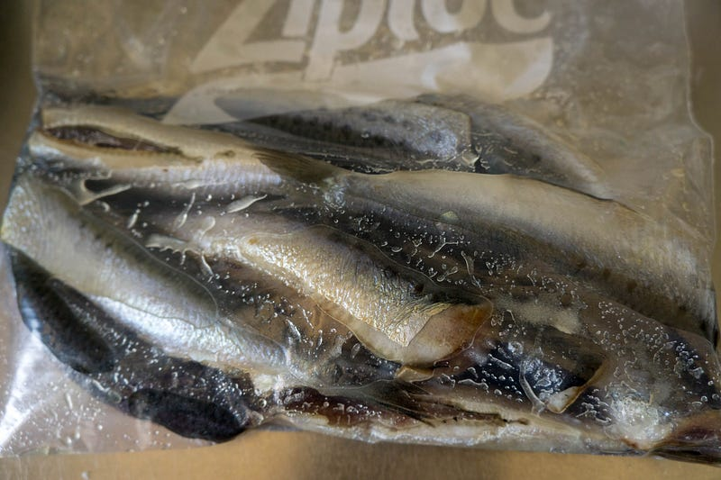
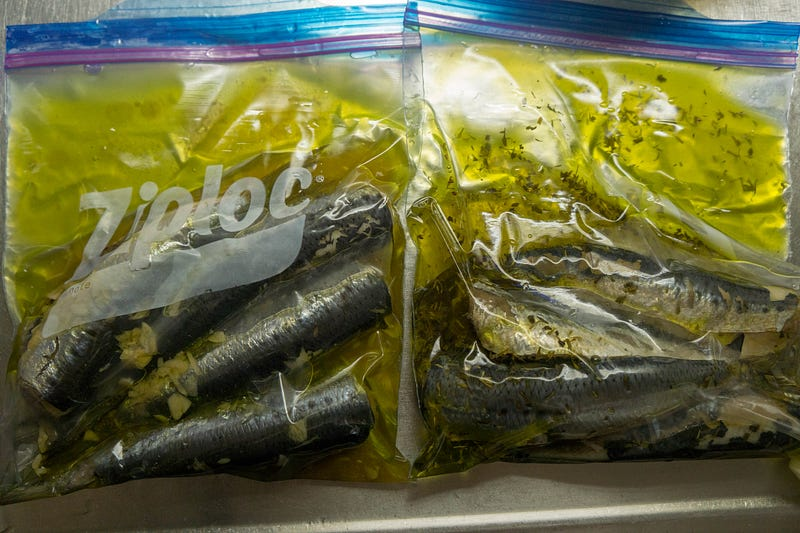
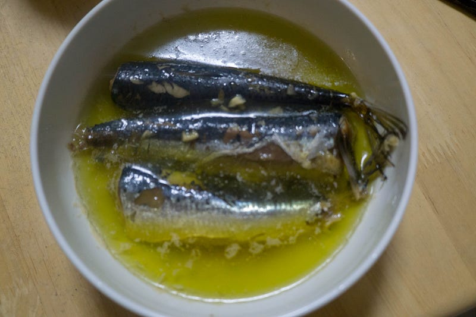

anovaで鰯のコンフィ
anovaで鰯のコンフィ
以前秋刀魚のコンフィについてのエントリは書いたが、あれ以降若干調理方法を変えた（下記エントリでも追記済み）。
今回は一匹60円だったところにさらに処分値段で安売りされていた鰯を使って作ったコンフィを紹介します。
塩の代わりに砂糖を使う
青魚をコンフィにする場合、調理前にやはり水気と臭みをしっかり取っておきたい。今回は前日に捌かれた安売りの鰯なのでなおさらである。

自分の知識ではこのような場合は塩を使うというのが定番だった。
しっかり塩をすれば確かに水気もそうとう切れる。だけど、同時に余計にしょっぱくなってしまうというのが問題だった。
アンチョビを作るつもりならもちろんそれでもいいのだが、もうちょっと良い塩梅があるはず… とは思う物の、他にやり方を知らなかった。
ところがここ最近、ようやく砂糖が使える、という事を知った。曰く、砂糖の分子は大きめなので塩より吸収されにくいので甘くはならないんだとかなんとか。それでいてちゃんと水気が切れるということ… らしい。
根底の科学は検証してないけど、実際何回かやってみたら秋刀魚や鰯のような比較的小さい身の魚の水気・臭み抜きには合っている気がしているので最近は最初にまず砂糖での処理をしています。
鰯は水洗いをした後、砂糖をまぶす。

砂糖は結構多め。全体（特に腹の部分とか）に軽く衣をつけるイメージ。
今回は前日に捌かれた処分品なので特にしっかりやっておく。鰯の香りを楽しむ〜とかいうなら新鮮な物のほうがそりゃいいけど、コンフィにしちゃうなら、こんなんで充分。
あと、自分でも何回かやってみて、「頭と内臓は、毎日やってる人に任せたほうが上手」という真理に気づいたので、抵抗なくスーパーの人が捌いてくれた魚を買うことにした。
ジップロックに入れて、身を壊さないように優しく砂糖をまぶして、1〜2時間くらい冷蔵庫で放置。
今回の味付けはにんにく醤油と、塩ハーブの2種類。

時間が来たら、まずニンニクをみじん切りにしておく。
鰯は軽く水洗いして砂糖を落とす。ゴシゴシする必要はない。水をあてて砂糖が流れおちればいいです。
鰯はそれぞれ別の小分けのジップロックに移して、味付け。
にんにく醤油のほうは、塩、にんにく、醤油、サラダ油、オリーブオイルを入れる。塩味は醤油ではなくて、塩で主にまかなう。醤油はどちらかというと香り付けにするので、量はあんまりいらない。一回しくらい？にんにくはお好きに。あと、自分はにんにく醤油味のほうは油の比率をサラダ油多めにしてる。なんとなく。
塩ハーブのほうは、まぁ要はお好きなハーブとオリーブオイルで和えちゃう、という感じ。今日家にあったのは、タイムとパセリだったのでそれらをざざっと入れた。油はこちらはオリーブオイルが8割くらい。最後にちょっとだけサラダ油を。
どちらも油は多く入れる必要はないです。ジップロックを密封した時に全体に油が馴染んでるくらいでオーケー。anovaによるコンフィ作りはこの油の量の調節可能な部分が素晴らしい。
味をつけたら、もう一回冷蔵庫で寝かせておきます。1時間くらいかなー。ちなみに今日は色々あって調理を忘れてて3時間くらい放置してしまった。
anovaを用意して、70~80℃くらいの温度で1時間〜2時間。前回は70℃でやってみたけど、今回は76℃で2時間やってみました。
こちらはにんにく醤油味。味はしっかり入ってる物の、柔らかい味でご飯に合う。

今回の温度での出来上がりは前回の70℃と遜色ない感じ。
前回のサンマは少しだけ内臓の臭いが気になったけど、これは単純に自分の魚のさばき方が悪かっただけなきがする。
温度に関してはだいぶ前にやったときの80℃は少しやり過ぎ感があったので、それ以下だったらいいのかなー。
60℃でやるのも手だけど、家族に食べさせることを考えると怖い…
ともあれ、安売り鰯でも一手間かけて下拵えをしたら、おいしい物ができるのがわかった。
下拵えの後はanovaで寝かせておくだけだし、出来上がったらあら熱を取ってジップロックのまま冷凍しておける。食べるときもレンジでチンするだけ。
残った油も、お好きならペペロンチーノ等に転用可能。
anovaがあると少量の油でコンフィができるし、なにより放っておけるので、低温調理ばかりしてないで、是非やってみてほしい。本当におすすめ！